<!DOCTYPE html>
<html class="writer-html4" lang="en" >
<head>
  <meta charset="utf-8">
  
  <meta name="viewport" content="width=device-width, initial-scale=1.0">
  
  <title>2. Software Package Installation &mdash; RflySimDoc 1.0 documentation</title>
  

  
  <link rel="stylesheet" href="../_static/css/theme.css" type="text/css" />
  <link rel="stylesheet" href="../_static/pygments.css" type="text/css" />

  
  
  
  

  
  <!--[if lt IE 9]>
    <script src="../_static/js/html5shiv.min.js"></script>
  <![endif]-->
  
    
      <script type="text/javascript" id="documentation_options" data-url_root="../" src="../_static/documentation_options.js"></script>
        <script type="text/javascript" src="../_static/jquery.js"></script>
        <script type="text/javascript" src="../_static/underscore.js"></script>
        <script type="text/javascript" src="../_static/doctools.js"></script>
        <script type="text/javascript" src="../_static/language_data.js"></script>
    
    <script type="text/javascript" src="../_static/js/theme.js"></script>

    
    <link rel="index" title="Index" href="../genindex.html" />
    <link rel="search" title="Search" href="../search.html" />
    <link rel="next" title="3. Hardware Platform Configuration" href="HardwareConfiguration.html" />
    <link rel="prev" title="1. Overall Introduction" href="Introduction.html" /> 
</head>

<body class="wy-body-for-nav">

   
  <div class="wy-grid-for-nav">
    
    <nav data-toggle="wy-nav-shift" class="wy-nav-side">
      <div class="wy-side-scroll">
        <div class="wy-side-nav-search" >
          

          
            <a href="../index.html" class="icon icon-home" alt="Documentation Home"> RflySimDoc
          

          
          </a>

          
            
            
          

          
<div role="search">
  <form id="rtd-search-form" class="wy-form" action="../search.html" method="get">
    <input type="text" name="q" placeholder="Search docs" />
    <input type="hidden" name="check_keywords" value="yes" />
    <input type="hidden" name="area" value="default" />
  </form>
</div>

          
        </div>

        
        <div class="wy-menu wy-menu-vertical" data-spy="affix" role="navigation" aria-label="main navigation">
          
            
            
              
            
            
              <p class="caption"><span class="caption-text">Introduction</span></p>
<ul>
<li class="toctree-l1"><a class="reference internal" href="../0_Start/WhatIsRflysim.html">1. What is RflySim</a></li>
<li class="toctree-l1"><a class="reference internal" href="../0_Start/GettingStarted.html">2. Getting Started</a></li>
</ul>
<p class="caption"><span class="caption-text">Modeling</span></p>
<ul>
<li class="toctree-l1"><a class="reference internal" href="../1_Modeling/Modeling.html">1. Modeling</a></li>
</ul>
<p class="caption"><span class="caption-text">Experimental Process</span></p>
<ul class="current">
<li class="toctree-l1"><a class="reference internal" href="Introduction.html">1. Overall Introduction</a></li>
<li class="toctree-l1 current"><a class="current reference internal" href="#">2. Software Package Installation</a><ul>
<li class="toctree-l2"><a class="reference internal" href="#installation-steps">2.1. Installation Steps</a></li>
<li class="toctree-l2"><a class="reference internal" href="#advanced-settings">2.2. Advanced Settings</a></li>
<li class="toctree-l2"><a class="reference internal" href="#installation-completion">2.3. Installation Completion</a></li>
<li class="toctree-l2"><a class="reference internal" href="#brief-introduction-to-software">2.4. Brief Introduction to Software</a></li>
</ul>
</li>
<li class="toctree-l1"><a class="reference internal" href="HardwareConfiguration.html">3. Hardware Platform Configuration</a></li>
</ul>
<p class="caption"><span class="caption-text">Experimental Platform Usage:</span></p>
<ul>
<li class="toctree-l1"><a class="reference internal" href="../3_Using/Introduction.html">1. Brief Introduction to Experimental Platforms</a></li>
<li class="toctree-l1"><a class="reference internal" href="../3_Using/ControllerDesignAndSimulationPlatform.html">2. Simulink-Based Controller Design and Simulation Platform</a></li>
<li class="toctree-l1"><a class="reference internal" href="../3_Using/PSPToolbox.html">3. PSP Toolbox</a></li>
<li class="toctree-l1"><a class="reference internal" href="../3_Using/PixhawkHardwareSystem.html">4. Pixhawk Hardware System</a></li>
<li class="toctree-l1"><a class="reference internal" href="../3_Using/HILSimulator.html">5. HIL Simulation Platform</a></li>
<li class="toctree-l1"><a class="reference internal" href="../3_Using/Examples.html">6. Examples</a></li>
</ul>
<p class="caption"><span class="caption-text">RflySim Advanced Functions</span></p>
<ul>
<li class="toctree-l1"><a class="reference internal" href="../4_Pro/Advanced.html">1. Installation Method</a></li>
<li class="toctree-l1"><a class="reference internal" href="../4_Pro/BasicFeatures.html">2. Basic Features</a></li>
<li class="toctree-l1"><a class="reference internal" href="../4_Pro/OtherTypesofVehicles.html">3. Other Types of Vehicles</a></li>
<li class="toctree-l1"><a class="reference internal" href="../4_Pro/Customizationof3DScenarios.html">4. Customization of 3D Scenarios</a></li>
<li class="toctree-l1"><a class="reference internal" href="../4_Pro/UAVSwarmControl.html">5. UAV Swarm Control</a></li>
<li class="toctree-l1"><a class="reference internal" href="../4_Pro/UAVVisionAIControl.html">6. UAV Vision/AI Control</a></li>
<li class="toctree-l1"><a class="reference internal" href="../4_Pro/FuturePlan.html">7. Future Plan</a></li>
</ul>
<p class="caption"><span class="caption-text">Course</span></p>
<ul>
<li class="toctree-l1"><a class="reference internal" href="../5_Course/Book.html">1. Book</a></li>
<li class="toctree-l1"><a class="reference internal" href="../5_Course/CourseContent.html">2. Course Content</a></li>
</ul>
<p class="caption"><span class="caption-text">Download &amp; Support:</span></p>
<ul>
<li class="toctree-l1"><a class="reference internal" href="../7_DownloadAndSupport/DownloadAndSupport.html">1. Download</a></li>
<li class="toctree-l1"><a class="reference internal" href="../7_DownloadAndSupport/DownloadAndSupport.html#faq">2. FAQ</a></li>
<li class="toctree-l1"><a class="reference internal" href="../7_DownloadAndSupport/DownloadAndSupport.html#support">3. Support</a></li>
<li class="toctree-l1"><a class="reference internal" href="../7_DownloadAndSupport/DownloadAndSupport.html#reference">4. Reference</a></li>
</ul>

            
          
        </div>
        
      </div>
    </nav>

    <section data-toggle="wy-nav-shift" class="wy-nav-content-wrap">

      
      <nav class="wy-nav-top" aria-label="top navigation">
        
          <i data-toggle="wy-nav-top" class="fa fa-bars"></i>
          <a href="../index.html">RflySimDoc</a>
        
      </nav>


      <div class="wy-nav-content">
        
        <div class="rst-content">
        
          


<div role="navigation" aria-label="breadcrumbs navigation">

  <ul class="wy-breadcrumbs">
    
      <li><a href="../index.html" class="icon icon-home"></a> &raquo;</li>
        
      <li>2. Software Package Installation</li>
    
    
      <li class="wy-breadcrumbs-aside">
        
            
            <a href="../_sources/2_Configuration/SoftwareInstallation.rst.txt" rel="nofollow"> View page source</a>
          
        
      </li>
    
  </ul>

  
  <hr/>
</div>
          <div role="main" class="document" itemscope="itemscope" itemtype="http://schema.org/Article">
           <div itemprop="articleBody">
            
  <div class="section" id="software-package-installation">
<h1>2. Software Package Installation<a class="headerlink" href="#software-package-installation" title="Permalink to this headline">¶</a></h1>
<p>The installation process of the Simulation Software Package is highly automated
and readers can run a one-click installation script to achieve rapid and automatic
deployment.</p>
<div class="section" id="installation-steps">
<h2>2.1. Installation Steps<a class="headerlink" href="#installation-steps" title="Permalink to this headline">¶</a></h2>
<p>The installation steps are summarized below.</p>
<p>(1) Download the installation image file “RFLYExpPspSoftwarePack.iso” of the
Simulation Software Package from <a class="reference internal" href="../7_DownloadAndSupport/DownloadAndSupport.html"><span class="doc">Download and Support</span></a>,
and then unzip it or mount it to a virtual drive folder.</p>
<p>(2) Open MATLAB and click the “Browse for Folder” button (see Fig. 2.3). On the
folder selection window, select the folder “RFLYExpPspSoftwarePack” obtained
in the previous step.</p>
<p>(3) As shown in Fig. 2.3, tap the command “PX4InstallScript” in the “Command
Window” of MATLAB and press the “Enter” key on the keyboard to run the
one-key installation script. Note that another convenient way to run the one-key
script is to select the “PX4InstallScript.p” file (see Fig. 2.3) with the mouse right
key, and click the “Run” button on the pop-up menu.</p>
<blockquote>
<div><div class="figure align-center" id="id1">
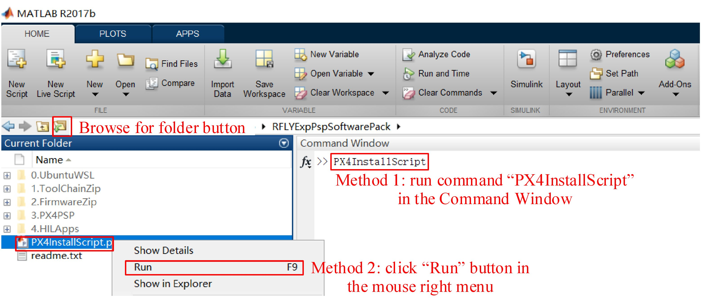
<p class="caption"><span class="caption-text">Fig. 2.3 Installing multicopter simulation software package with one-click installation script</span></p>
</div>
</div></blockquote>
<p>(4) In the pop-up configuration window shown in Fig. 2.4, select the required
configuration according to the actual hardware and software requirements (the default
configuration is recommended for beginners, where the compiling command is
px4fmu-v3_default, the PX4 firmware version is 1.7.3, and the installation
directory is the C disk, which may occupy around 6G storage), and click the “OK”
button in Fig. 2.4.</p>
<blockquote>
<div><div class="figure align-center" id="id2">
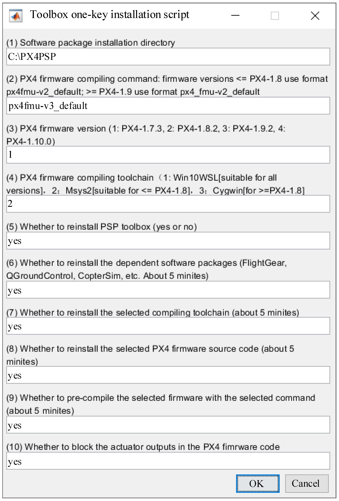
<p class="caption"><span class="caption-text">Fig. 2.4 Options of PX4InstallScript</span></p>
</div>
</div></blockquote>
<p>(5) Wait patiently for the package to be successfully installed and deployed, which
may take around 30 min.</p>
<p><strong>Noteworthy</strong> :</p>
<p>(1) Antivirus software may prevent this script from generating desktop shortcuts.
If the script prompts that the shortcut generation has failed, please close the
antivirus software (Windows 10 should also turn off the “Real-time protection”
option in the Settings page) and manually click the “GenerateShortcutCMD.bat”
script in the installation directory (the default directory is C:PX4PSP) to
automatically generate all the software shortcuts.</p>
<p>(2) If readers want to change the firmware configurations or restore the
compiling environment, just run the “PX4InstallScript” command again and select the
required options.</p>
<p>(3) Readers can check the document “readme.txt” in the folder “RFLYExpPspSoftwarePack”
for more detailed notes.</p>
</div>
<div class="section" id="advanced-settings">
<h2>2.2. Advanced Settings<a class="headerlink" href="#advanced-settings" title="Permalink to this headline">¶</a></h2>
<p>For advanced independent developers, Fig. 2.4 provides options to select the installation directory, Pixhawk hardware version, PX4 firmware version, compiling command, compiling environment, etc. The options in Fig. 2.4 are explained in detail
below.</p>
<p>(1) <strong>Software package installation directory</strong> . All dependent files on the software
package are installed in this directory, which requires around 6G storage. The
default installation directory is “C: PX4PSP”. If the C disk space is not suffi-
cient, readers should choose a directory in other disks; the directory name must
be correct and only in English to prevent compilation failures.</p>
<p>(2) <strong>PX4 firmware compiling command</strong> . The default compiling command for PX4
is “px4fmu-v3_default”. By selecting this compiling command, the compiling
toolchain is automatically called to compile the PX4 source code to a firmware
file “px4fmu-v3_default.px4” after the PSP generates the controller code. Then,
the file “.px4” is uploaded to the supported hardware to realize the deployment
of the control algorithms. Different Pixhawk hardware products must select
different PX4 firmware compiling commands. Figure 2.5 shows some Pixhawk
hardware products, where “px4fmu-v3_default” can be used for three popular
products: Pixhawk 1 (2MB flash version), mRo <a class="reference external" href="https://docs.px4.io/master/en/flight_controller/mro_pixhawk.html.">Pixhawk</a>
and Cube (<a class="reference external" href="https://docs.px4.io/master/en/flight_controller/pixhawk-2.html">Pixhawk 2</a> ).
The command “px4fmu-v2_default” corresponds to the most famous <a class="reference external" href="https://docs.px4.io/master/en/flight_controller/pixhawk.html">Pixhawk 1</a> .
PX4 also supports other hardware (for example, <a class="reference external" href="https://software.intel.com/en-us/aero/drone-kit">Intel Aero</a> ,
<a class="reference external" href="https://www.bitcraze.io/crazyflie-2/">Crazy-flie</a> , and so on).
The corresponding compiling <a class="reference external" href="http://dev.px4.io/master/en/setup/building_px4.html">commands</a>
are listed below.</p>
<ul>
<li><p class="first">Pixhawk 1: px4fmu-v2_default.px4</p>
</li>
<li><p class="first">Pixhawk 1 (2MB flash version): px4fmu-v3_default.px4</p>
</li>
<li><p class="first">Pixhawk 4: px4fmu-v5_default</p>
</li>
<li><p class="first">Pixracer: px4fmu-v4_default</p>
</li>
<li><p class="first">Pixhawk 3 Pro: px4fmu-v4pro_default</p>
</li>
<li><p class="first">Pixhawk Mini: px4fmu-v3_default</p>
</li>
<li><p class="first">Pixhawk 2: px4fmu-v3_default</p>
</li>
<li><p class="first">mRo Pixhawk: px4fmu-v3_default</p>
</li>
<li><p class="first">HKPilot32: px4fmu-v2_default</p>
</li>
<li><p class="first">Pixfalcon: px4fmu-v2_default</p>
</li>
<li><p class="first">Dropix: px4fmu-v2_default</p>
</li>
<li><p class="first">MindPX/MindRacer: mindpx-v2_default</p>
</li>
<li><p class="first">mRo X-2.1: auav-x21_default</p>
</li>
<li><p class="first">Crazyflie 2.0: crazyflie_default</p>
</li>
<li><p class="first">Intel Aero Ready to Fly Drone: aerofc-v1_default.</p>
<blockquote>
<div><div class="figure align-center" id="id3">
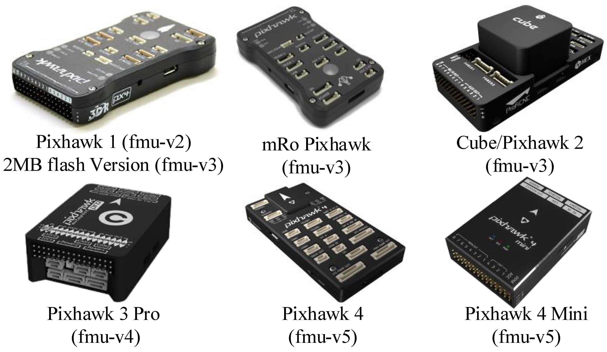
<p class="caption"><span class="caption-text">Fig. 2.5 Pixhawk hardware series products with compiling commands</span></p>
</div>
</div></blockquote>
</li>
</ul>
<p>(3) <strong>PX4 firmware version</strong> . The version of the PX4 source code is updated
constantly, and the latest firmware version was 1.10 when this book was written. As
the firmware version is upgraded, new features may be introduced, and more
new products will be supported, but the compatibility with some old
autopilot hardware will be affected. Because the Pixhawk 1 (2MB flash version, or
mRo Pixhawk) hardware selected in this book is an old Pixhawk product with
LED for better experimental observation effect, the older PX4 firmware
version 1.7.3 was selected with the compiling command “px4fmu-v3_default” to
achieve better-using effect.</p>
<p>(4) <strong>PX4 firmware compiling toolchain</strong> . Because the compilation of PX4 source
code depends on the Linux compiling environment, the software package provides three sets of compiling toolchains to realize the simulation of the Linux
compiling environment under the Windows environment.</p>
<blockquote>
<div><ol class="arabic simple">
<li><a class="reference external" href="https://en.wikipedia.org/wiki/Windows_Subsystem_for_Linux">Win10WSL</a> based on the Windows Subsystem compiler environment for Linux (WSL);</li>
<li>the Msys2Toolchain based on <a class="reference external" href="https://baike.baidu.com/item/MSYS2">Msys2</a> toolchain;</li>
<li>the CygwinToolchain based on the <a class="reference external" href="https://www.cygwin.com/">Cygwin</a> toolchain.</li>
</ol>
<div class="admonition note">
<p class="first admonition-title">Note</p>
<p class="last">the CygwinToolchain only supports PX4 firmware with version
1.8 or above; the Msys2Toolchain only supports PX4 firmware with version
1.8 or below. Both the CygwinToolchain and the Msys2Toolchain support
Windows 7 and above, which are easy to deploy, but the compiling speed
is slow. For Windows10 1809 and above, readers can follow the tutorial in
“0.UbuntuWSLWin10UbuntuInstallationStep.docx” to install an Ubuntu subsystem in
Windows and then choose theWin10WSL toolchain shown in Fig. 2.4.
The Win10WSL toolchain can greatly accelerate the compiling speed and support
all versions of PX4 firmware.</p>
</div>
</div></blockquote>
<p>(5) <strong>Whether to reinstall the PSP Toolbox (yes or no)</strong> . If this option is set to
“yes”, the PSP Toolbox is installed on MATLAB/Simulink. If the PSP toolbox
has already been installed, a new installation of the PSP Toolbox is performed.
If this option is set to “no”, the script does not do anything on the existing PSP
toolbox (it will not uninstall the PSP toolbox or carry out other actions).</p>
<p>(6) <strong>Whether to reinstall the dependent software packages</strong> . If this option is set
to “yes”, software tools (such as FlightGear, QGC, CopterSim, and 3DDisplay)
are deployed to the selected installation directory and shortcuts for them are
generated on the desktop. The related drivers for Pixhawk hardware are also
installed. If the software tools have already been installed, selecting “yes” will
remove the old installation files and reinstall them. If this option is set to “no”,
then no change will be made.</p>
<p>(7) <strong>Whether to reinstall the selected compiling toolchain</strong> . If this option is set
to “yes”, the selected compiling toolchain (Win10WSL, CygwinToolchain, or
Msys2Toolchain) will be deployed to the selected installation directory. If the
toolchain already installed, the script will remove the old toolchain files and
reinstall it. In contrast, if this option is set to “no”, then no change will be made.</p>
<p>(8) <strong>Whether to reinstall the selected PX4 firmware source code</strong> . If this option
is set to “yes”, the selected PX4 firmware source code will be deployed to
the selected installation directory. If the firmware files already exist, the old
firmware folder will be deleted, and a new copy of the source code will be
deployed. If this option is set to “no”, then no change will be made.</p>
<p>(9) <strong>Whether to pre-compile the selected firmware</strong> . If this option is set to “yes”,
the PX4 source code will be pre-compiled. This can greatly save the compiling
time of the subsequent code generation process; whether the compiling environment
is installed properly can also be checked. If this option is set to “no”,
then no change will be made.</p>
<p>(10) <strong>Whether to block the actuator outputs of the PX4 original controller</strong> . If
this option is set to “yes”, the control signals of the PX4 original controller will
be blocked to prevent them from conflicting with the generated controller in
Simulink. This option must be set to “yes” for the simulations and experiments
in this book. If this option is set to “no”, the PX4 outputs will not be blocked,
and this mode can be used to test the PX4 original controller.</p>
<blockquote>
<div><div class="admonition note">
<p class="first admonition-title">Note</p>
<p class="last">For the firmware versions 1.9 and above, the PX4 starts to use new compiling
commands with the form “px4_fmu-v3_default.px4” instead of “px4fmu-v3_default.px4”.
Because the simulation software package of this book will be continuously updated
for the latest PX4 firmware when using the latest version of the firmware (1.9 and
above), readers need to modify the compiling command in Fig. 2.4 to the correct
format.</p>
</div>
</div></blockquote>
</div>
<div class="section" id="installation-completion">
<h2>2.3. Installation Completion<a class="headerlink" href="#installation-completion" title="Permalink to this headline">¶</a></h2>
<p>When the above one-key installation scripted is successfully executed, readers can
check the installed content with the following procedure.</p>
<p>(1) As shown in Fig. 2.6, the shortcuts for the core software tools will be generated
on the desktop.</p>
<div class="figure align-center" id="id4">
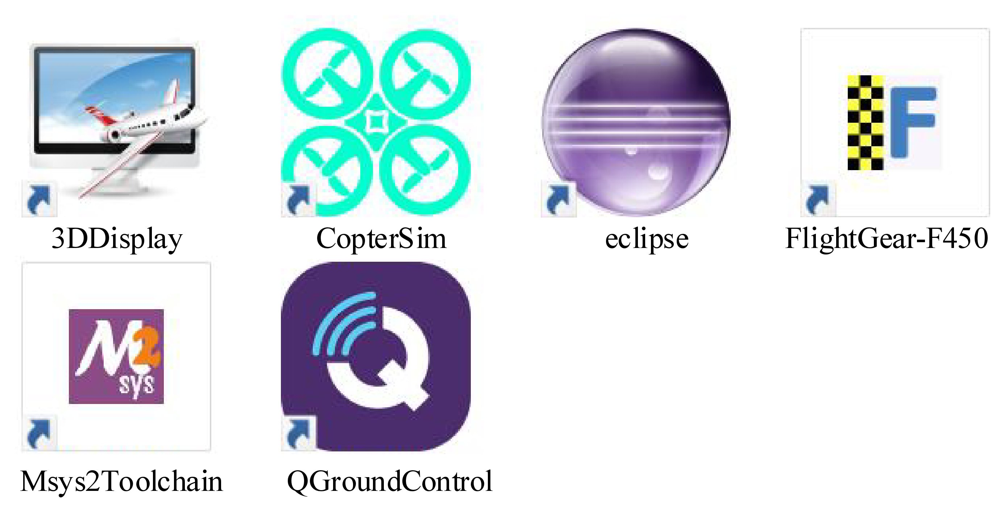
<p class="caption"><span class="caption-text">Fig. 2.6 Desktop shortcuts of simulation software package</span></p>
</div>
<p>(2) As shown in Fig. 2.7, the folders of all software tools are stored in the selected
installation directory (the default is “C:PX4PSP”). Note that all the software
tools are completely portable and independent of the original software (e.g.,
official versions of QGC and FlightGear) on Windows. In Fig. 2.7, the folder
“Firmware” stores the PX4 source code. The folder “examples” stores Simulink
source code examples of the PSP toolbox; the folder “drivers” stores Pixhawk
drivers. The folder “Python27” stores a Python environment for the automatic
firmware uploading of the PSP toolbox. The names of other folders are the same
as the software names, whose detailed introduction can be found in Sect. 2.1.2.</p>
<div class="figure align-center" id="id5">
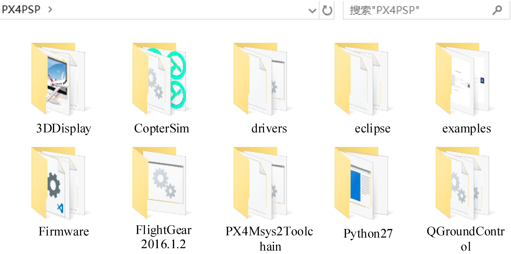
<p class="caption"><span class="caption-text">Fig. 2.7 All files in installation directory of simulation software package</span></p>
</div>
<p>(3) As shown in Fig. 2.8, the installed PSP toolbox can be found on the “Add-Ons” -
“Manage Add-Ons” page of MATLAB. On this page, some management operations can
be performed for the PSP toolbox that includes disabling, uninstalling,
and viewing the installation directory. Note that the PSP toolbox can be installed
once for all the MATLAB applications on a computer whose versions are higher
than or equal to MATLAB R2017b.</p>
<div class="figure align-center" id="id6">
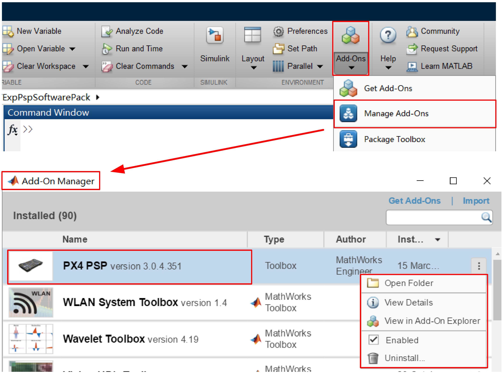
<p class="caption"><span class="caption-text">Fig. 2.8 PSP Toolbox management page in MATLAB</span></p>
</div>
<p>(4) As shown in Fig. 2.9, readers can open any Simulink file and click the “Simulink
Library Brower” button to open the Simulink library browser, and then find the
“Pixhawk Target Blocks” library generated by the PSP toolbox.</p>
<div class="figure align-center" id="id7">
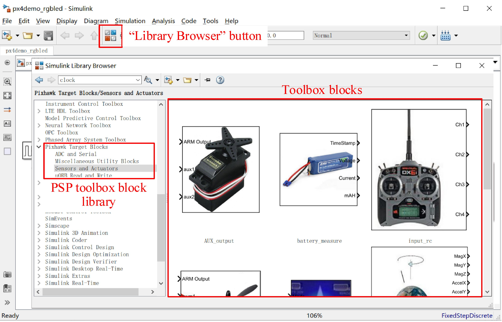
<p class="caption"><span class="caption-text">Fig. 2.9 PSP toolbox in Simulink library browser</span></p>
</div>
<p>If readers want to uninstall the simulation software package, they can carry out
the following steps:</p>
<ol class="arabic simple">
<li>Delete all the desktop shortcuts presented in Fig. 2.6;</li>
<li>Delete all files and folders in the installation directory presented in Fig. 2.7;</li>
<li>In the “Management Additional Functions” page of MATLAB presented in Fig. 2.8, click the “Uninstall” button to uninstall the PSP toolbox.</li>
</ol>
</div>
<div class="section" id="brief-introduction-to-software">
<h2>2.4. Brief Introduction to Software<a class="headerlink" href="#brief-introduction-to-software" title="Permalink to this headline">¶</a></h2>
<p>(1) Double-click the desktop shortcuts shown in Fig. 2.6, which include
“FlightGearF450”, “CopterSim”, “QGroundControl” and “3DDisplay”. Then, check the
software User Interface (UI) one by one with Fig. 2.10 to confirm that each
software can operate correctly.</p>
<div class="figure align-center" id="id8">
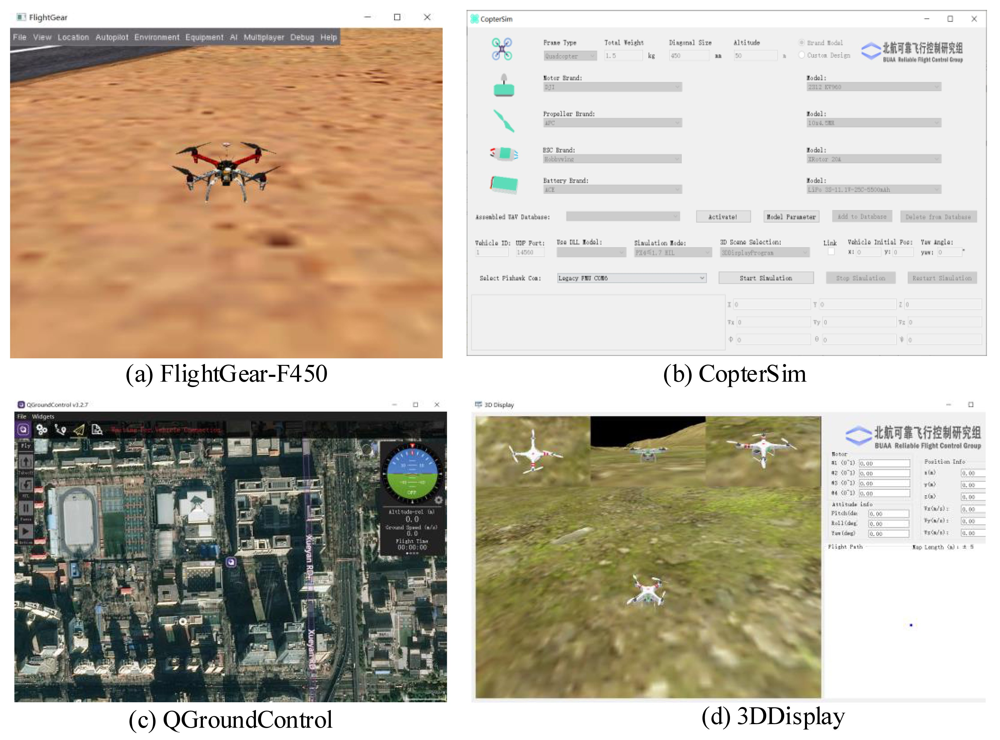
<p class="caption"><span class="caption-text">Fig. 2.10 Basic software UIs for simulation tools</span></p>
</div>
<p>(2) Double-click the desktop shortcut “Eclipse” in Fig. 2.6 to open the Eclipse
software. As shown in Fig. 2.11, click “File” – “Import…” – “C/C++”—“Existing
Code as Makefile Project” from the menu bar of the Eclipse, and then click
“Next”. In the “Existing Code Location” section of the pop-up window, click
the “Browse” button to locate the “Firmware” folder in the installation directory
(default is “C:PX4PSP”), then choose “Cross GCC” and click the “Finish” button.</p>
<div class="figure align-center" id="id9">
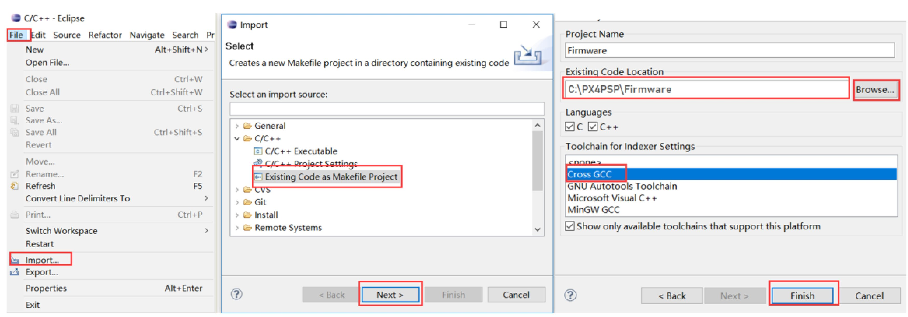
<p class="caption"><span class="caption-text">Fig. 2.11 Importing PX4 Firmware source code into Eclipse</span></p>
</div>
<p>After completing the above steps, as shown in Fig. 2.12, the source code and
directory structure of the “Firmware” can be found in the “Project Explorer”
window, where readers can read the PX4 source code and try to modify it. Readers
can also view the PX4 developer documentation <a class="reference external" href="http://dev.px4.io/master/en/index.html">website</a>
to clearly understand
the architecture and implementation principles of the PX4 algorithms and deepen
the understanding of an actual flight control system. Note that: a “Welcome” tab
will cover the content shown in Fig. 2.12 when readers first open Eclipse, it must
be closed manually.</p>
<div class="figure align-center" id="id10">
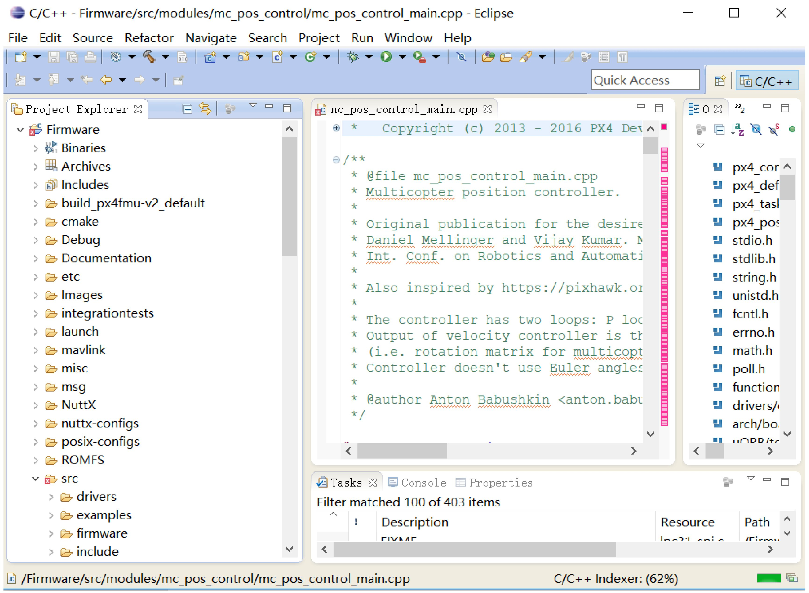
<p class="caption"><span class="caption-text">Fig. 2.12 Eclipse code reading interface</span></p>
</div>
<p>(3) Double-click one of the three shortcuts “Win10WSL”, “Msys2Toolchain” or
“CygwinToolchain” on the desktop to pop up the command window interface
shown in Fig. 2.13 (the original UI has a pure black background, and the image
color has been reversed for reading). Because the compiling toolchains are
essentially Linux emulation software, the basic Linux commands (such as “ls”, “pwd”,
and “gcc—version”) can be tapped on the command line. For readers who are
unfamiliar with Linux operations, this compiling toolchain can also be used as a
Linux learning and practice tool. The most important function of this toolchain
is to compile the source code of PX4 and generate the “.px4” firmware file.
As shown in Fig. 2.13, “make clean” can be tapped on the command line to
clear the old compiling files, and the “make px4fmu-v3_default” command is
used to compile the source code to the firmware file “C:PX4PSPFirmwarebuildpx4fmu-v3_defaultpx4fmu-v3_default.px4” for Pixhawk 1 (2MB flash
version). Because the PSP toolbox will automatically call this compiling
command after the code is generated, readers do not need to know how to use it.</p>
<div class="figure align-center" id="id11">
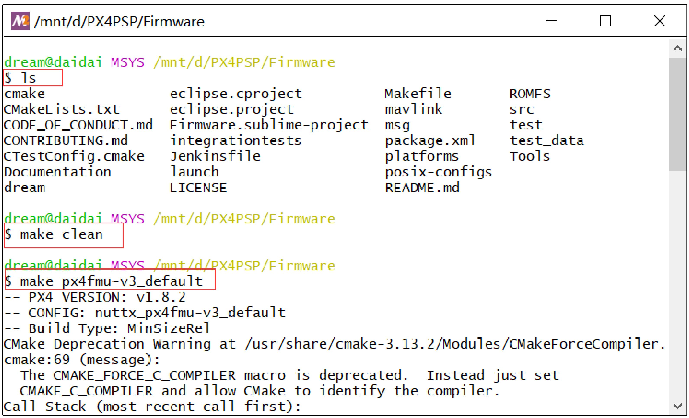
<p class="caption"><span class="caption-text">Fig. 2.13 Commands tapped in compiling toolchains</span></p>
</div>
</div>
</div>


           </div>
           
          </div>
          <footer>
  
    <div class="rst-footer-buttons" role="navigation" aria-label="footer navigation">
      
        <a href="HardwareConfiguration.html" class="btn btn-neutral float-right" title="3. Hardware Platform Configuration" accesskey="n" rel="next">Next <span class="fa fa-arrow-circle-right"></span></a>
      
      
        <a href="Introduction.html" class="btn btn-neutral float-left" title="1. Overall Introduction" accesskey="p" rel="prev"><span class="fa fa-arrow-circle-left"></span> Previous</a>
      
    </div>
  

  <hr/>

  <div role="contentinfo">
    <p>
        
        &copy; Copyright 2020, Rfly

    </p>
  </div>
    
    
    
    Built with <a href="http://sphinx-doc.org/">Sphinx</a> using a
    
    <a href="https://github.com/rtfd/sphinx_rtd_theme">theme</a>
    
    provided by <a href="https://readthedocs.org">Read the Docs</a>. 

</footer>

        </div>
      </div>

    </section>

  </div>
  

  <script type="text/javascript">
      jQuery(function () {
          SphinxRtdTheme.Navigation.enable(true);
      });
  </script>

  
  
    
   

</body>
</html>